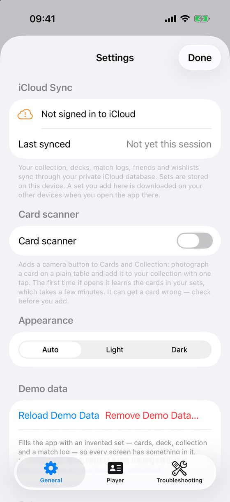
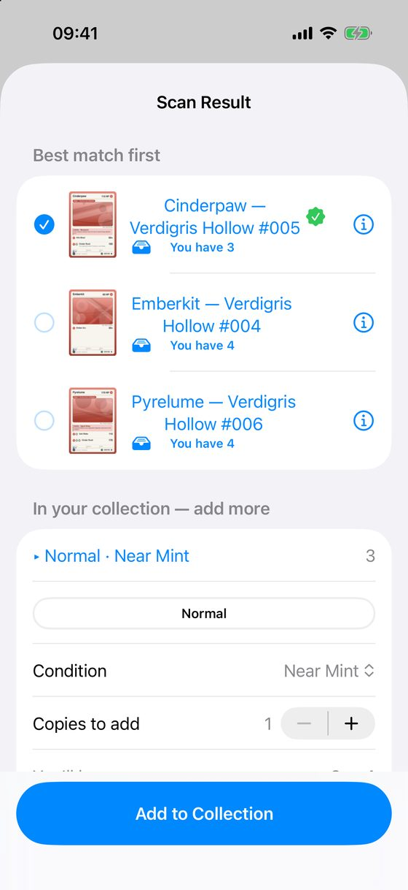
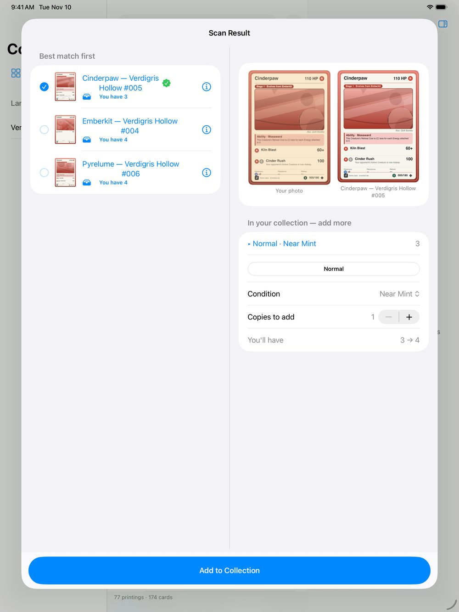

Scan cards with the camera
On iPhone and iPad, the scanner finds a card in front of the camera and adds it to your collection. It is off until you switch it on. There is no scanner on the Mac.
Turn it on
- Open Settings ▸ General.
- Turn on Card scanner.
- A camera button now appears on Cards and Collection: a round blue button at the bottom right on iPhone, a button at the top right on iPad.

Switching the scanner on starts the learning: under the switch, Settings shows Learning your cards with a count and a bar. This takes a few minutes. You can use the rest of the app meanwhile; keep the app open until it is done. If you open the scanner before then, it shows the same count and starts working when the learning is finished. After that it opens straight away. It learns again only when you add or download a set.
Scan a card
- Tap the camera button.
- Lay one card flat on a plain, darker table, inside the dashed outline.
- Hold still. The scanner says Card found — hold still and then Recognising…. When it is fairly sure, the results appear by themselves.
- To scan at once, press the round button at the bottom. It always works.
Check and add
The results list the five closest cards, best first. A green seal marks the best match when the scanner is confident. Look before you add: it can get a card wrong.

- If the best match is wrong, tap another one. Tap the ⓘ button to see a card in full.
- Choose the Type (Normal, Holo, Reverse Holo…).
- Choose the Condition. It stays the same from one scan to the next, because a stack of cards is usually one condition.
- Set Copies to add if you have several.
- Check the line You'll have, for example 3 → 4.
- Tap Add to Collection. A banner says what was added, with Undo.
A card you already own says You have 3 under its name. After you add a card, the scanner does not show it again while it is still in view. Take it away and put the next one down.

If it does not recognise a card
- Check that the card's set is added in Manage Sets.
- Use a plain, darker table and even light, without glare. Foil and sleeves reflect, so tilt them away from the lamp.
- Keep one card in view.
- Move closer so the card fills more of the picture.
- If it keeps saying Not sure, press the round button and pick the right card by hand.